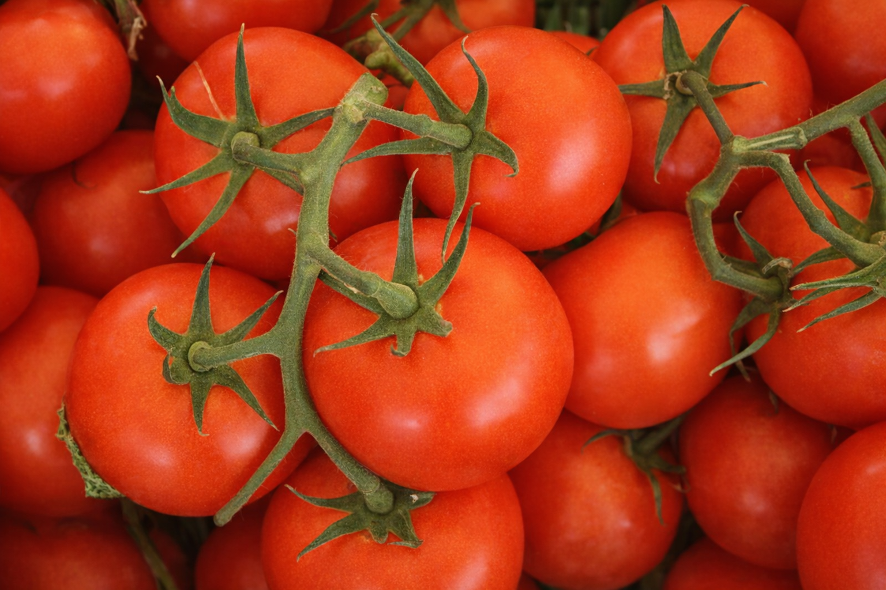

Bio
Tomates de temporada
2,10€ / 500g
Tomates auténticos madurados al sol del mediterraneo. Sabor auténtico y natural. Incluye fotos de la finca del agricultor para garantizar su origen directo.
Agricultor: Andrés Palomino
📍 Reus - Tarragona
⭐⭐⭐⭐⭐ (4.4 valoración)